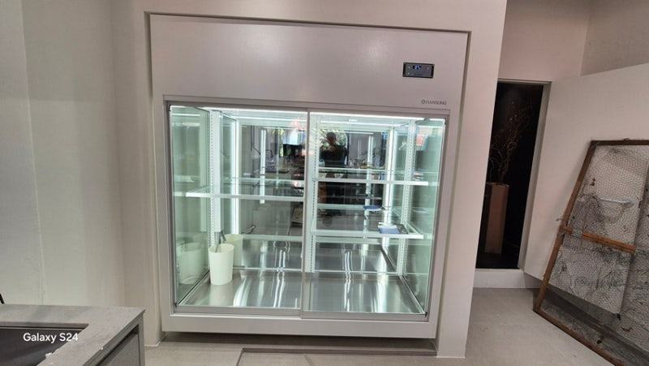
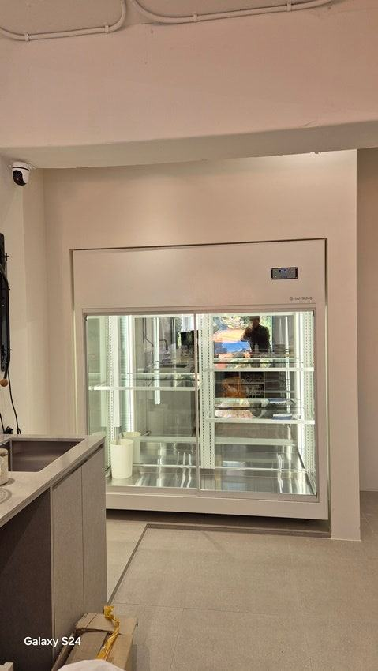
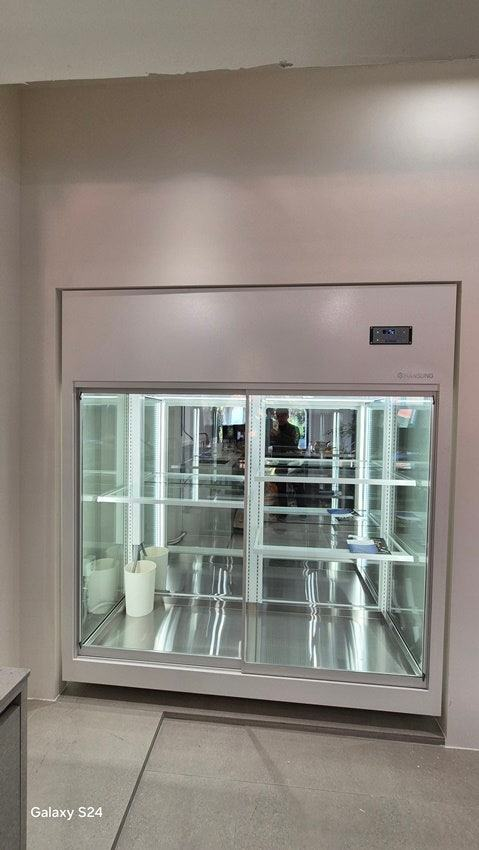
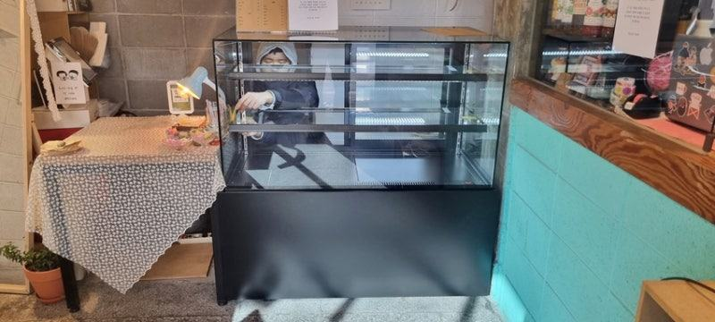
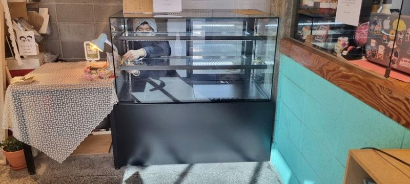
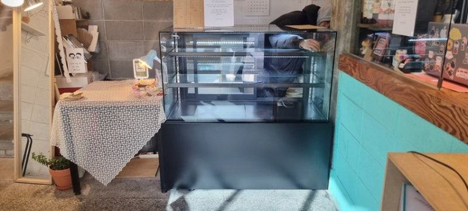
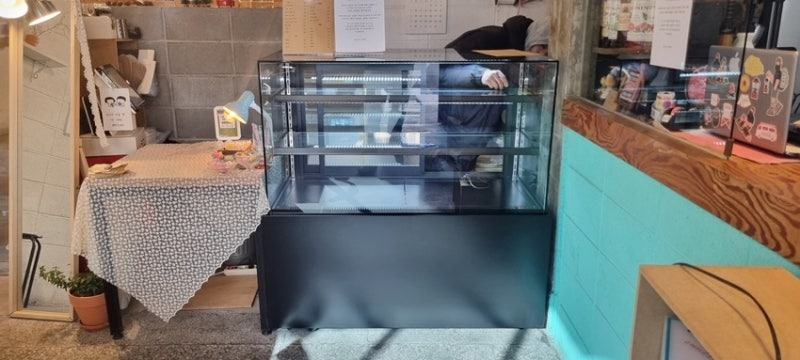
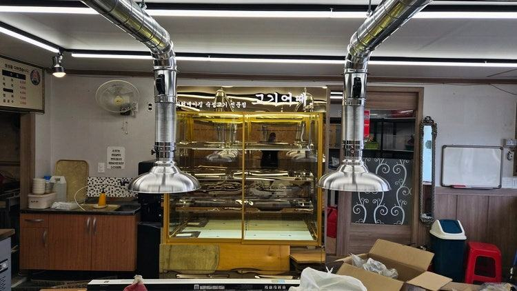

와인(음료)쇼케이스
업소용음료수냉장고 수명, 오래 쓰는 매장의 관리 습관

업소용음료수냉장고 수명은 몇 년이라고 딱 잘라 말하기 어렵고, 콤프레셔 주변 먼지와 통풍, 채우는 양, 성에 처리 습관에 따라 크게 달라집니다. 같은 제품이라도 이 네 가지를 꾸준히 챙긴 매장이 고장 없이 더 오래 쓰는 경우가 많습니다.
안녕하세요. 카페와 식당, 주점의 음료 쇼케이스를 맞춤으로 만들고 설치 뒤 관리까지 돕는 한성쇼케이스입니다.
"이거 몇 년 쓸 수 있어요?" 음료 냉장고 상담에서 거의 빠지지 않는 질문입니다. 한 번 들이면 오래 써야 하는 장비라 당연히 궁금하실 수밖에 없죠.
그런데 현장을 다녀 보면 같은 시기에 들인 같은 제품인데도 한 매장은 멀쩡히 잘 쓰고, 다른 매장은 잔고장이 잦습니다.
차이는 대부분 제품보다 놓인 자리와 쓰는 습관에서 생깁니다. 업소용 냉장고는 하루 24시간 쉬지 않고 돌아가는 장비라 작은 습관이 쌓이면 결과가 크게 벌어집니다.
오늘은 업소용음료수냉장고를 오래 쓰는 매장들이 공통으로 지키는 관리 습관과, 수리나 교체를 고민해야 할 신호를 정리해 드리겠습니다.
1. 콤프레셔 주변 먼지
음료 냉장고의 심장은 콤프레셔입니다. 그런데 바닥 가까이나 뒤쪽에 있는 기계실은 매장 먼지가 가장 많이 모이는 곳이기도 합니다.
먼지가 쌓이면 열이 빠지지 못해 콤프레셔가 더 오래, 더 세게 돌고, 성능 저하와 전기 요금 증가로 이어집니다.
청소할 때는 꼭 전원 코드를 뽑은 뒤, 부드러운 솔이나 청소기로 기계실 먼지를 털어 주세요. 주기를 정해 두고 달력에 표시해 두면 잊지 않습니다.
- 청소 전에 반드시 전원 코드를 뽑으세요.
- 기계실 통풍구 먼지를 정기적으로 털어 주세요.
- 청소 날짜를 달력에 적어 두세요.
2. 가득 채우지 않기
음료는 박스째 들어오니 냉장고를 꽉 채우고 싶어집니다. 하지만 내부를 빈틈없이 채우면 냉기가 돌 길이 막혀 뒤쪽과 아래쪽 음료가 덜 차가워지고, 냉장고는 그만큼 무리해서 돌아갑니다.
전체 용량의 60~70% 정도만 채워 쓰는 것이 수명을 늘리는 팁입니다. 남는 재고는 창고용 냉장고로 나누고, 진열 냉장고에는 그날 팔 만큼만 채워 회전시키는 방식을 추천합니다.


3. 성에는 녹여서 없애기
성에가 두껍게 끼면 냉각 효율이 떨어집니다. 급한 마음에 칼이나 드라이버로 긁어내다 냉각 파이프에 구멍이 나면, 수리로 끝나지 않고 아예 쓰지 못하게 될 수도 있습니다.
성에는 가동을 잠시 멈추고 자연스럽게 녹이는 게 안전합니다. 두꺼워질수록 녹이는 시간이 길어지니 얇을 때 자주 없애 주세요.
문 패킹이 들떠 습한 공기가 계속 들어오면 성에가 빨리 생기니 패킹 상태도 함께 보세요.
4. 위에 물건 올리지 않기
냉장고 위는 빈 박스나 컵 홀더를 올려 두기 좋은 자리처럼 보입니다. 하지만 상부에 열을 내보내는 부품이 있는 제품이라면 공기 순환이 막혀 콤프레셔가 제대로 작동하지 못합니다.
뒷면과 벽 사이 간격, 위쪽 공간을 비워 두는 것만으로도 장비가 받는 부담이 줄어듭니다. 매립 설치라면 통풍구가 막히지 않았는지 정기적으로 확인해 주세요.
- 냉장고 위에 박스나 물건을 올리지 마세요.
- 뒷면과 벽 사이 간격을 유지하세요.
5. 수리나 교체를 고민할 신호
설정 온도까지 내려가는 시간이 눈에 띄게 길어졌거나, 콤프레셔가 멈추지 않고 계속 돌거나, 전에 없던 소리와 진동이 난다면 점검을 받아 보세요.
대부분은 초기에 잡으면 부품 교체로 해결됩니다.
몸체 단열이 상했거나 냉각 계통 전반에 문제가 있다면 교체를 검토하는 편이 낫습니다. 어느 쪽인지는 어디에 문제가 생겼는지로 판단해야 하니, 증상을 정리해 A/S에 알려 주세요.
체크리스트
- 기계실 먼지 청소 주기
- 용량의 60~70%만 채우기
- 성에는 가동 멈추고 녹이기
- 냉장고 상부와 뒷면 비워 두기
- 문 패킹 상태
- 냉각 시간·소음 변화 기록
현장에서 자주 보는 경우: 관리 습관 하나로 고장이 잦아질 때
반찬가게나 식당에서 쓰는 영업용 냉장고를 점검하러 가 보면, 음료 냉장고와 똑같은 원인으로 고장이 나는 경우가 많습니다.
기계실 먼지가 두껍게 쌓여 있거나, 상품을 빈틈없이 채워 냉기가 돌지 못하거나, 냉장고 위에 물건이 잔뜩 올라가 있는 모습입니다.
성에를 날카로운 도구로 긁어내다 파이프에 구멍이 나 아예 쓰지 못하게 된 경우도 있었습니다. 이런 문제는 대부분 평소 청소와 사용 습관만 바꿔도 예방할 수 있습니다.
24시간 돌아가는 장비인 만큼, 문제가 생기기 전에 미리 관리하는 것이 수명을 늘리는 가장 확실한 방법입니다.





자주 묻는 질문
업소용음료수냉장고는 보통 몇 년 쓰나요?
사용 환경과 관리에 따라 차이가 커서 햇수로 정해 말씀드리기 어렵습니다. 기계실 청소와 통풍, 적정량 진열을 지키면 고장 없이 쓰는 기간이 길어집니다.
청소는 얼마나 자주 해야 하나요?
매장 먼지 양에 따라 다르지만 주기를 정해 꾸준히 하시는 게 중요합니다. 주방 가까이 있거나 출입문 근처라 먼지가 많다면 더 자주 확인해 주세요.
오래 쓴 제품도 A/S를 받을 수 있나요?
네, 사용 기간보다 문제 부위가 중요합니다. 전국 240여 개 A/S 센터를 통해 접수하시면 수리로 해결할 수 있는지 먼저 확인해 드립니다.
매장 조건에 맞춰 만드는 한성쇼케이스
원하시는 제품 사진과 설치할 공간 사진만 보내 주셔도 매장에 맞는 구성을 추천해 드립니다.
- 전국 240여 개 A/S 전담 센터 운영
- 본사 대량 자재 매입으로 품질 대비 합리적인 가격
- 유럽제·삼성 냉각 콤프레셔 적용
- 국내 최초 쇼케이스 전문 디자이너 상주
매장 폭과 원하는 진열 구성을 알려 주세요. 실측과 견적을 안내해 드립니다.
031-986-2458